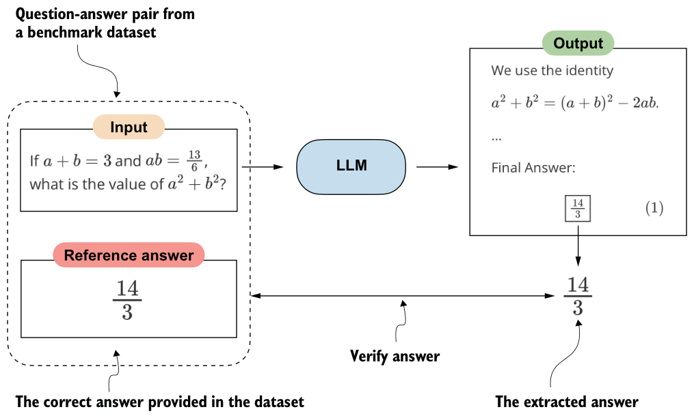
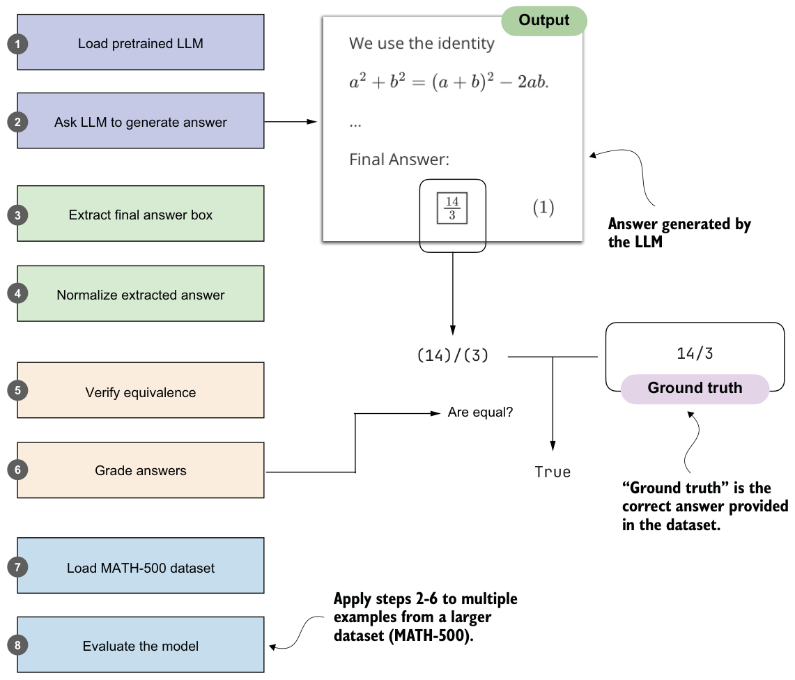

3.1Building a math verifier
There are four common ways to evaluate trained LLMs in practice: multiple choice, verifiers, leaderboards, and LLM judges. These methods are widely used across research papers, technical reports, marketing materials, and model cards (documents that summarize how a model was trained, evaluated, and intended to be used), and results often draw from more than one category.
As figure 3.1 illustrates, these evaluation approaches can be grouped into two broader types: benchmark-based evaluation and judgment-based evaluation. The former is usually more quantitative, whereas the latter relies more on qualitative judgments. All four evaluation methods are useful in different contexts, but verifiers are especially relevant for reasoning models.
Math problems provide a natural example: depending on the problem’s complexity, they benefit from step-by-step reasoning, yet evaluation is straightforward because the final answer can be checked against the correct answer. In this setting, the verifier provides a simple and reliable way to measure whether a model’s reasoning steps lead to the correct outcome.
In this chapter, we’ll focus on verifiers as a benchmark-based approach for measuring answer correctness in math problems. Verifiers compare the extracted answer with the reference solution, as shown in figure 3.2, often by relying on external tools such as code interpreters or calculator programs.

While our immediate focus is evaluation, verifiers will reappear later in this book. They serve not only as a way to measure performance but also as the feedback signal used in reinforcement learning methods to train reasoning models, which we’ll explore in chapter 6.
The downside is that verifier methods can be applied only to domains that can be easily (and, ideally, deterministically) verified, such as math and code. Also, this approach can introduce additional complexity and dependencies, and it may shift part of the evaluation burden from the model itself to the external tool.
Because math problem solving can be generated in unlimited variations programmatically and because it benefits from step-by-step reasoning, this task has become a cornerstone of evaluating and developing reasoning models. In this chapter, we’ll build a math verifier step by step, following the eight steps shown in figure 3.3.
14/3
(14)/(3)True
The next section will go through steps 1 and 2 in figure 3.3: loading a pretrained LLM and setting it up to generate answers.